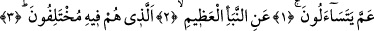
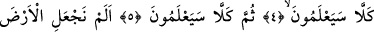
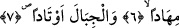

BİRBİRLERİNE
NEYİ SORUYORLAR?
Bismillâhirrahmânirrahîm
1. Birbirlerine neyi soruyorlar?
2. Büyük haberi mi?
3. (İnanıp inanmamakta) ayrılığa düştükleri
4. Hayır! Anlayacaklar!
5. Yine hayır! Onlar anlayacaklar!
6. Biz yeryüzünü bir döşek,
7. Dağları da birer kazık yapmadık mı?
Mekkeliler “birbirlerine neyi soruyorlar?” Âyetteki “amme” lafzının aslı; “an mâ”
biçimindedir. Daha sonra “gunne”de müşterek olduklarından “nun” “mim” harfine
idğam edilerek “ammâ” şeklini almıştır. Ardından kelimenin sonundaki elif, “lime”,
“bime”, “fîme”, “ilâme”, “‘alâme” kelimelerinde olduğu gibi hazfedilmiştir. Esasen,
işâret ettiğimiz bu kelimelerin de aslı; “bimâ-fîmâ-ilâmâ-alâmâ” şeklinde idi. Bu iki
kelimenin (an ile mâ’nın) birbirine idğam edilmeleri sebebsiz değildir. Ya soru edâtı
olan “mâ” ile başka çeşit “mâ”ları birbirinden ayırmak veya çok kullanıldıklarından
dolayı ifâdede hafiflik sağlamak için idgam yapılmıştır.
Ebu’l-Baka’nın ifâde ettiği üzere “amme” kelimesi, elif hazfedilmeksizin “ammâ”
biçiminde de gelmiştir.
Buradaki belirsizliğe gelince; bu belirsizlik sorulan şeyin önemine ve azametine işâret
etmek için getirilmiştir. Sorulan şey, o günün dehşeti ve alışılmış şeylerin dışında
olmasıdır. Sanki bu şeyin cinsi gizli bırakılmış da şimdi soruluyor gibi olmuştur.
Âyetteki soru hakikati (yâni bilinmeyen bir şeyi öğrenmek) üzere değildir. Tam tersine
böyle bir soru, sadece o sorulan şeyi yüceltmek için yöneltilmektedir. Çünkü sorulan
şey, Allah Teâlâ’ya –hâşâ- kapalı ve O’nun mechulü olan bir husus değildir. Zira “Bize
âid hiçbir sır Allah’a gizli kalmaz” (el-Hakka 69/18) âyetinin ifâdesiyle Allah
Teâlâ’ya hiçbir şey meçhûl kalmaz. Bütün bu açıklamalar ışığında âyet-i kerîmeye şöyle